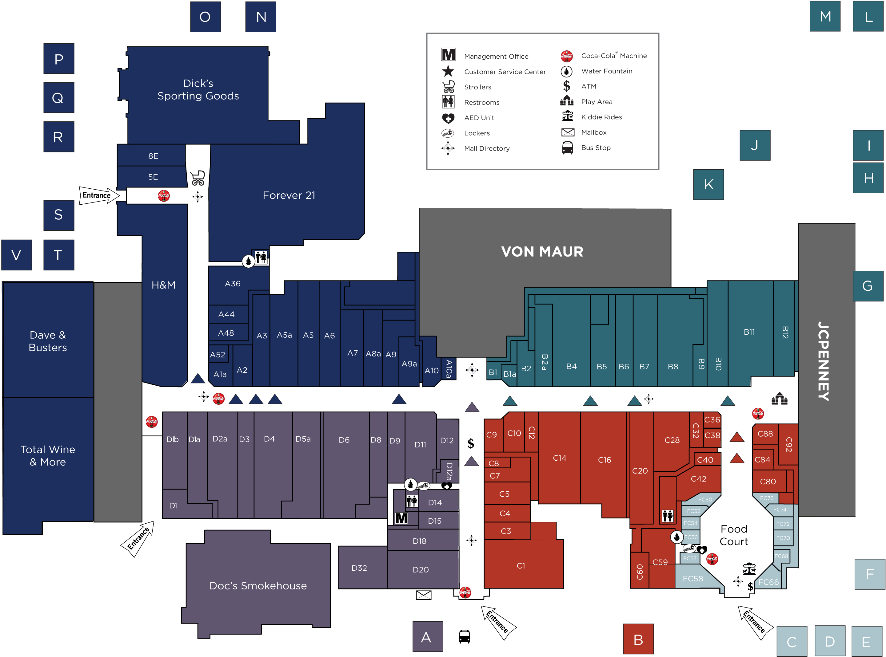
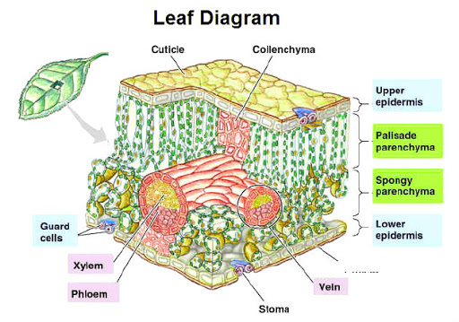
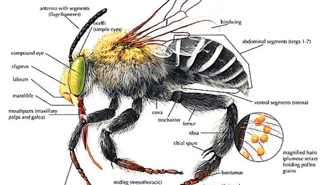
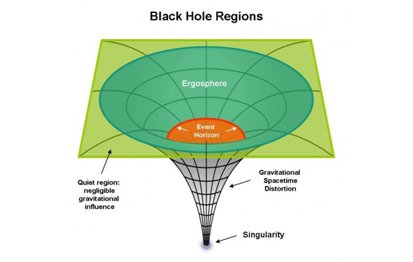
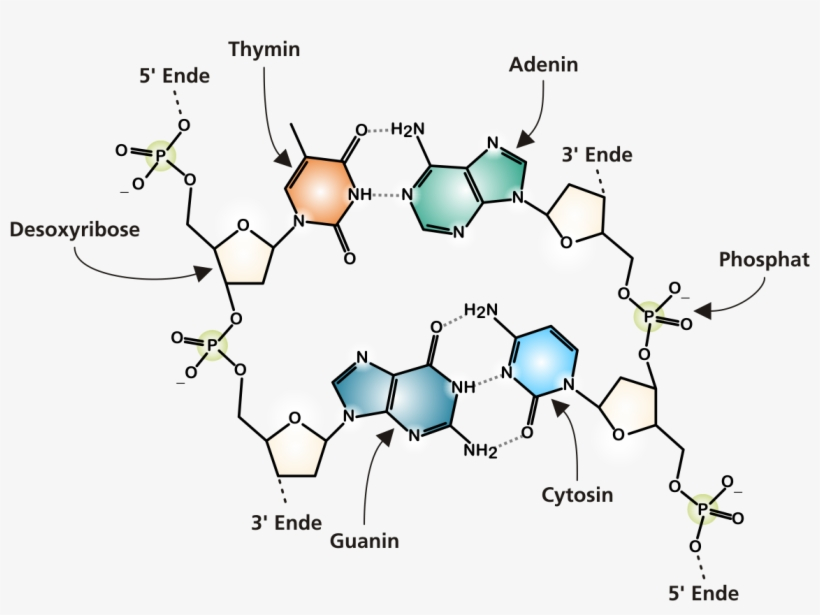
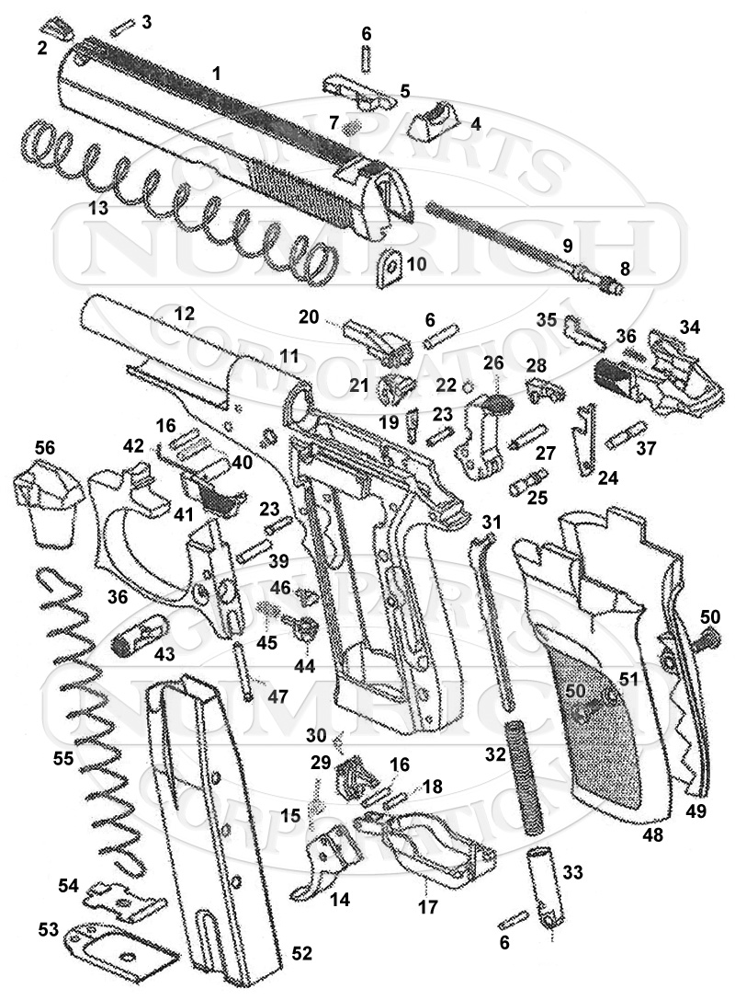
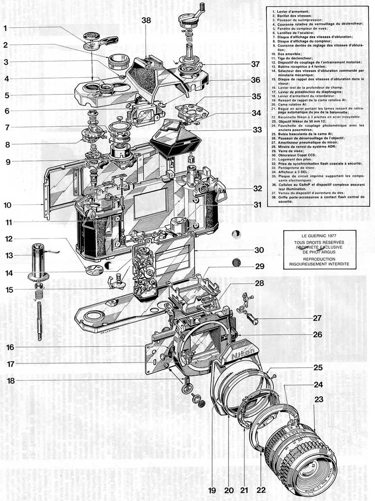
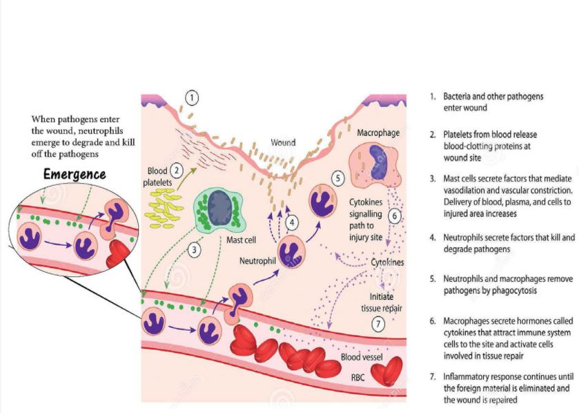
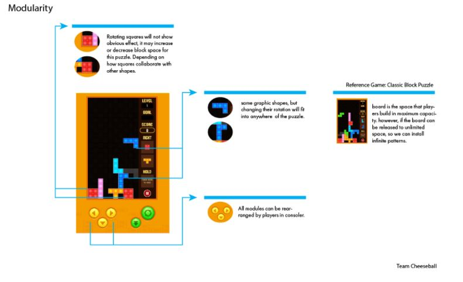

READING #1 | SYSTEM & COMPLEXITY
Part 1
1) What is a good working definition of what a System is and perhaps what it is not?
A variety of components that collaborate together and keeps flow together and working is a good working definition. One that is not would be an random unorganized mess that cannot complete a function.
2) For the 4 system definitions you were to look up please give in your own words what they mean and give an example of them for each case.
Decomposability: To break down or reduce to components. An example
of this is breaking down a computer into smaller parts.
Modularity: Rearrangable components of a system. A good example
would be a car's parts that can be replaced with better parts for better
performance.
Emergence: A sequence of interactions that form an intricate outcome. For
example, the interaction between man and fire resulted in an intricate outcome
of the discovery of electricity.
Chaos Theory: An event that creates an unpredictable reaction, but for
every action, there is an equal and opposite reaction, so there is an explanation
and pattern for this "undpredictable reaction." For example, when dropping a fork,
the landing of the fork may seem random, but there is a pattern behind its landing.
3) Give us your definition of what Tessellation means and give an example you encountered, not mentioned in the reading.
It means repeating geometric shapes that combine with each other. An example of this would be a kaleidoscope pattern.
4) What is the difference between ideas of Modularity and Tesselation? What are the properties that are in opposition with each other?
For modularity it requires any type of component to separate and recombine with another component, but for tessellation there is only shapes and it can combine with other shapes repeatedly without leaving spaces between each shape.
5) What is the difference between designing something that has Complexity (aperiodic) vs being Uniform (periodic)?
Complexity has an intricate pattern while Uniform has a straightforward repeating pattern.
6) Group Activity. Each student will need to bring in a series of 8 diagrams.
2 System Diagrams With More Than 100 Elements


2 System Diagrams That Is Something Considered Living


2 System Diagrams That Represent Something That Is Not Visible or Physical


2 system diagrams that represent a system that incorperates modularity


Part 2
Vanessa
Erika
David